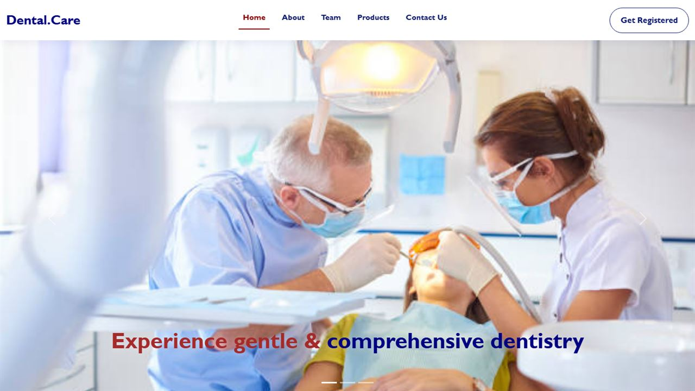

Guide potential patients
Visitors needed a simple way to explore dental services before deciding to contact the clinic.
Service-led structure
Service information, trust content and clear enquiry paths keep the experience easy to follow.
Live website journey
A live website that supports a clearer treatment-to-enquiry journey.